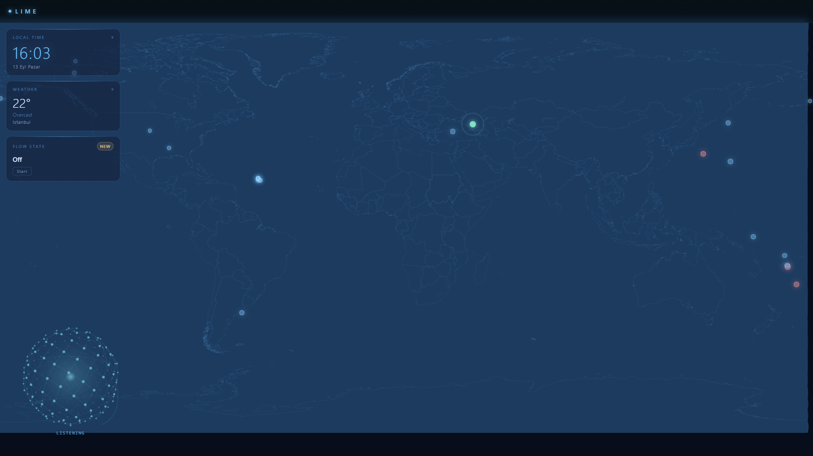

Say “Hey Lime.”
Your voice and your AI stay on your PC.
Lime is a Jarvis-style desktop assistant with a wake word, ~90 voice commands, a live world-data dashboard, and a memory that actually persists — speech recognition and language model both running on your own machine. Weather, news, and Spotify still need the internet, same as any app that talks to those services.
Ninety-some commands, no menus
Every phrase below is a real trigger pattern, matched deterministically before anything ever reaches the language model — so the thing that runs is never a guess.
What you actually see
No settings maze, no ribbon of buttons across the top. Three widgets, a live world map, and the core — that's the whole dashboard.

Watch the pipeline think
A live diagram of what's actually happening between hearing you and answering — not a loading spinner standing in for the real thing.
Lock in. Lime handles the rest.
One phrase — "start flow state" — and the whole assistant changes behavior for as long as you're in it. Built for actually getting something done, not for ambient vibes.
Trigger it by voice ("start flow state," "lock in," "focus mode," "deep work"), the widget's Start button, or Ctrl+Shift+F.
Nothing said once is gone by the next session.
Three separate systems, so nothing has to be repeated: durable personal facts, a searchable permanent conversation log, and a knowledge base you control.
Real Defender. Not a custom scanner.
Lime doesn't reinvent antivirus — it reads and drives the real, built-in Windows Defender that's already protecting your PC.
The model can talk. It can't act.
Real actions — opening apps, setting reminders, controlling devices — are handled by deterministic pattern matching, never improvised by the language model. Voice recognition and reasoning both make mistakes; giving that combination unchecked execution power was a deliberate no.
Common questions
The things people actually ask before installing a voice assistant that lives on their desktop.
Built by one person, for their own desk.
Lime isn't a company product — it's a solo, ongoing build, made by someone who wanted a voice assistant that actually respected the "local-first" part.
Hi, I'm Daniel. I build Lime by myself, on my own time — it's not a company or a team, just a personal project I've kept pushing on. It started as an experiment to see how far a fully local, privacy-respecting assistant could go with no cloud LLM, no account, and no telemetry, and it's grown one real feature at a time from there: persistent memory, a live world-data monitor, an honest deterministic command system, and most recently Flow State.
The "real, not fabricated" rule that runs through this whole site is mine: real Windows Defender instead of a fake scanner, real USGS/BBC/NASA feeds instead of invented news, real deterministic pattern matching instead of letting a language model improvise system actions.
I use Claude, Gemini, ChatGPT, and a few other AI models and tools to help me build faster — but every design decision, every architecture choice, and everything Lime looks and feels like is mine. AI is a tool I use, not the thing doing the building. I'm the one deciding what Lime becomes.
Download for Windows
Free. Runs offline. No account, no login, no cloud dependency for the core assistant.
Lime for Windows
Windows 10/11 · 8GB RAM minimum · microphone required